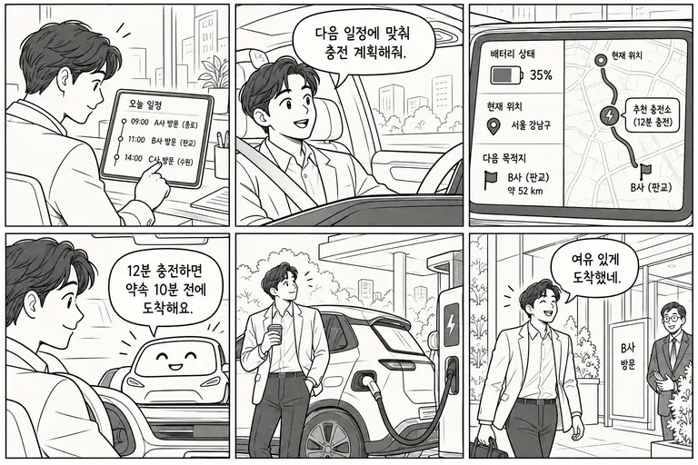

5 SDK CANDIDATE / 확장 검토
EV 출장·현장업무 에너지 플래너
약속에 늦지 않도록 충전과 이동을 함께 계획하는 여유.
5개 SDK 활용확장 검토01 / IDEA NOTES
누구의 어떤 순간을 바꿀까.
| 첫 사용자 | 출장·영업 조직의 전기차 운전자 |
| 문제 정의 | 배터리 상태와 다음 약속 시간을 따로 확인해 충전 여부와 경유지를 매번 판단한다. |
| 감성 포인트 | 약속에 늦지 않도록 충전과 이동을 함께 계획하는 여유. |
| 차량에서의 가치 | 차량 상태·위치·경로·음성을 하나의 안전한 이동 흐름으로 연결. |
02 / STORYBOARD
음성 한마디에서 준비된 도착까지.

- 상황 — 이동 전 일정과 필요한 준비를 확인합니다.
- 요청 — “다음 일정에 맞춰 충전 계획해줘”라고 말합니다.
- 판단 — 차량 상태·현재 위치·목적지 경로를 함께 계산합니다.
- 안내 — “12분 충전하면 약속 10분 전에 도착해요”라고 짧게 알려 줍니다.
- 실행 — 필요한 경유 또는 안전한 픽업·도착을 수행합니다.
- 감정 — 약속에 늦지 않도록 충전과 이동을 함께 계획하는 여유.
03 / IDEA NOTES
가치가 거래로 이어지는가.
| 지불 고객·수익 | 차량당·사용자당 업무 이동 구독 |
| 반복성 | 실제 이동·경유·도착 시점마다 반복되는 차량 안의 행동 |
| 첫 검증 | 출장 차량 3대의 실제 일정과 충전 의사결정 시간 비교 |
04 / IDEA NOTES
5개 SDK의 역할.
| SDK | 역할 |
|---|---|
| SpeechToText | 운전자의 짧은 요청을 텍스트로 변환 |
| Vehicle | 지원되는 배터리·연료·주행 상태 조회 |
| NaviHelper | 목적지·경유지와 길 안내 연동 |
| FusedLocation | 현재 위치와 목적지 접근 시점 확인 |
| TextToSpeech | 운전 중 필요한 결과를 짧게 음성 안내 |
차종별 capability와 프로젝트 권한을 먼저 확인합니다. 지원되지 않는 SDK는 정차 중 화면 선택으로 축소하며, UWB·Gleo·직접 결제를 가정하지 않습니다.
05 / IDEA NOTES
심사 기준으로 확인할 것.
| 차량특화성 | 휴대폰 앱 대비 차량 상태와 운전 중 음성 흐름이 만드는 우위 |
| 창의성 | 약속에 늦지 않도록 충전과 이동을 함께 계획하는 여유. |
| 기술 활용성 | 5개 SDK의 정상·권한 거절·값 없음 흐름 시연 |
| 사업성 | 출장 차량 3대의 실제 일정과 충전 의사결정 시간 비교 |